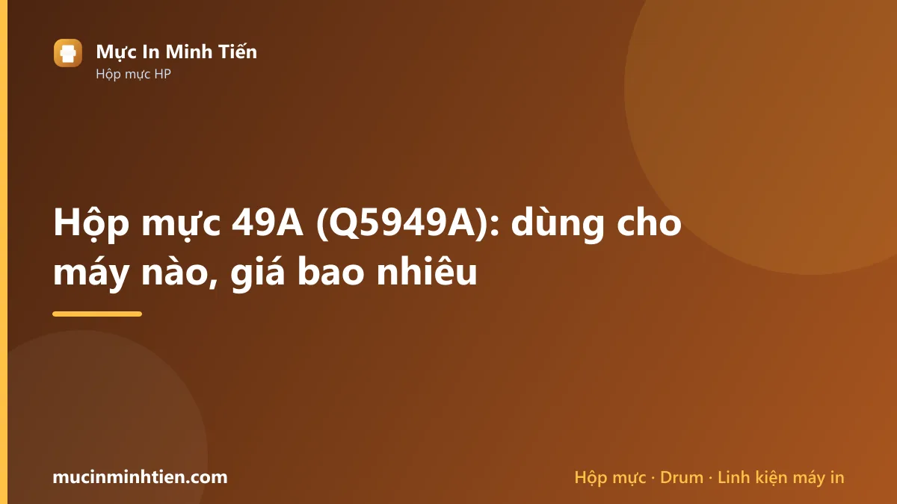
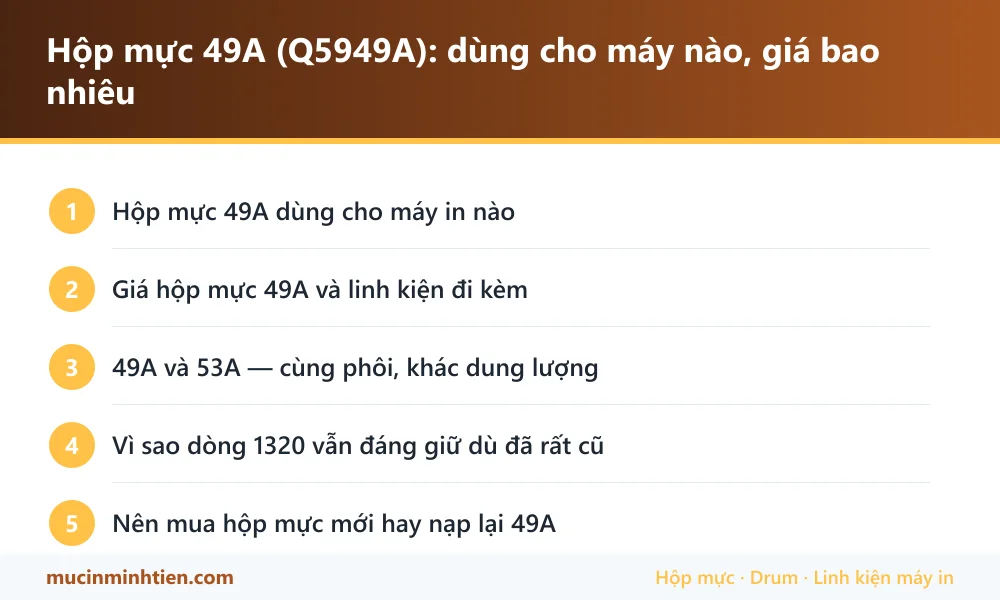

Hộp mực 49A (Q5949A): dùng cho máy nào, giá bao nhiêu

Hộp mực 49A (mã HP Q5949A) dùng cho HP LaserJet 1160, 1320, 3390, 3392 và Canon LBP 3300, 3360 dưới tên Cartridge 308. Một hộp đầy in được khoảng 2.500 trang văn bản.
Hộp mực 49A dùng cho máy in nào
| Dòng máy | Model cụ thể | Ghi chú |
|---|---|---|
| HP LaserJet | 1160, 1320, 1320n, 1320tn | Máy in văn phòng bền, tốc độ cao, nhiều máy vẫn chạy tốt sau 15 năm |
| HP LaserJet đa năng | 3390, 3392 | Bản có scan và fax |
| Canon LBP | 3300, 3360 | Canon gọi là Cartridge 308 |
| Dùng chéo | P2014, P2015, M2727 (mã 53A) | 53A cùng phôi, dung lượng cao hơn — xem lưu ý bên dưới |
Giá hộp mực 49A và linh kiện đi kèm
Bảng dưới là hàng đang có tại kho 77 Bắc Hải, Phường Diên Hồng, TP.HCM, giá tham khảo cho khách lẻ. Đây là giá thật trong bảng giá công khai, không phải giá quảng cáo.
| Sản phẩm | Nhóm | Giá tham khảo |
|---|---|---|
| Combo 10 cặp (10 cái) Ron từ 49A/53A/05A/80A/226A - Ron từ 05 | Linh kiện khác | 10.000 đ |
| Cặp bạc phíp 49A/53A dùng cho máy in Canon 3300 ,308 HP 1160, 1320 - Bạc phíp 49 | Linh kiện khác | 30.000 đ |
| Combo 5 cây Trục sạc 12A-05A-80A-49A-53A (Sạc zin 1 nước ) - Sạc 12A | Linh kiện khác | 60.000 đ |
| Combo 5 cây Trục sạc/ truc cao su/ trục lăn HP 12A/15A/49A/53A/05A/80A ( Sạc Trung Quốc ) - Sạc 12A Trung Quốc | Linh kiện khác | 75.000 đ |
| Combo 10 cây Trục cao su máy in Canon 2900-Trục sạc 12A/49A/53A/05A/80A ( Sạc zin 1 nước ) - trục Sạc 12A | Linh kiện khác | 110.000 đ |
| Combo 2 Trống in Drum HP 49A/53A (Drum Phấn) - Drum phấn 49A | Drum / Trống máy in | 39.000 đ |
| Combo 5 cây Gạt nhỏ 12A-49A-53A-05A-80A - Gạt 12A(N) | Gạt mực | 40.000 đ |
| combo 5 Gạt mực- gạt drum 49A-53A-15A-92A - gạt mực 49A | Gạt mực | 50.000 đ |
| Load giấy 49A dùng cho máy in Canon 3300 HP LaserJet 1160, 1320, 3390, P2014, P2015, P2015D, P2015N, M2727 - Load giấy 49A | Giấy in & Ruy băng | 35.000 đ |
| Con lăn 49A ra giấy máy in Canon 3300 HP 2015 2014 1160 1320 - Con lăn 49A | Giấy in & Ruy băng | 90.000 đ |
| Hộp mực 49A/53A dùng cho máy in Canon 3300/3360 HP 1160/1320/3390/3392/2015 - Mực 49A | Hộp mực & mực in máy in | 185.000 đ |
| Hộp mực RT 49A dùng cho máy in Canon 3300 HP 1160/ 1320/ 3390/ 3392 - RT 49A | Hộp mực & mực in máy in | 270.000 đ |
| Quả đào 49A HP 1160-1320-P2014-P2015-2100-2200-Canon 3300 - Quả đào 49A | Lô sấy, lô ép & linh kiện sấy | 30.000 đ |
| Nhông truyền sấy / nhông trung gian máy in HP1160 / 1320 / 2014 / 2015 / 3300 / 2035 / 2055 / 05 (49A) - Nhông truyền sấy 49A | Lô sấy, lô ép & linh kiện sấy | 40.000 đ |
| Trục quay quả đào 49A dùng cho máy in HP Laserjet 1160/ 1320/ 3390/ 3392/ Canon LBP 3300/ 3360 - Trục quay 49A | Lô sấy, lô ép & linh kiện sấy | 49.000 đ |
| Lô ép HP 1160 - 1320 - 49A - 3300 - lô ép 49A | Lô sấy, lô ép & linh kiện sấy | 130.000 đ |
| Seal 05A-80A-49A-53A-10 cái - Seal 05A | Chip & Seal | 35.000 đ |
| Trục từ 49A-53A-1320-1160-3300-5cái - trục từ 49A | Trục từ | 100.000 đ |
Không thấy mã cần tìm? Dùng công cụ tra cứu theo model máy hoặc xem bảng giá đầy đủ 773 mã.
49A và 53A — cùng phôi, khác dung lượng
Hai mã này dùng chung kiểu phôi, nên hầu hết linh kiện rời như gạt mực, trục từ, bạc phíp, nhông đều lắp lẫn được. Đó là lý do trong bảng giá bên dưới nhiều mặt hàng ghi kèm cả hai mã 49A/53A.
| Mã | Mã HP | Máy dùng | Số trang |
|---|---|---|---|
| 49A | Q5949A | 1160, 1320, 3390 | ~2.500 |
| 49X | Q5949X | 1320, 3390 (bản dung lượng cao) | ~6.000 |
| 53A | Q7553A | P2014, P2015, M2727 | ~3.000 |
| 53X | Q7553X | P2015, M2727 (dung lượng cao) | ~7.000 |
Lưu ý quan trọng: tuy phôi giống nhau, hộp mực thành phẩm không lắp lẫn tùy tiện giữa 49A và 53A vì khác kích thước lẫy và khác chip. Chỉ linh kiện bên trong mới dùng chung được.
Vì sao dòng 1320 vẫn đáng giữ dù đã rất cũ
HP LaserJet 1320 ra đời từ giữa những năm 2000 nhưng đến nay vẫn còn rất nhiều máy chạy hằng ngày. Lý do là máy dùng khung kim loại, cụm sấy khỏe, in nhanh và hộp mực dung lượng lớn nên chi phí trên mỗi trang thấp hơn hẳn các dòng máy nhỏ đời mới.
Nhược điểm của tuổi tác nằm ở phần cơ: quả đào và bố thắng chai gây kéo nhiều tờ, bạc phíp mòn gây kêu, và lô sấy xuống cấp gây nhòe bản in. Cả ba đều là linh kiện rời rẻ tiền, thay xong máy chạy tiếp nhiều năm.
Nếu máy bạn đang nuốt nhiều tờ giấy một lúc, quy trình kiểm tra và bộ phận cần thay có ở bài máy in kéo nhiều tờ giấy cùng lúc — nguyên lý giống nhau ở mọi máy in laser để bàn.
Nên mua hộp mực mới hay nạp lại 49A
49A là mã rất đáng nạp lại. Dung lượng 2.500 trang cao hơn hẳn các mã máy nhỏ, phôi bền chịu được nhiều lần nạp, và linh kiện rời có sẵn với giá thấp.
Với máy 1160 và 1320 đang chạy ổn, nạp mực là phương án hợp lý nhất về chi phí. Chỉ cần chú ý thay gạt mực và trục từ đúng lúc, tránh để drum bị xước rồi mới xử lý.
Nên thay hộp mới khi drum đã xước sâu gây sọc đen không hết sau khi vệ sinh, hoặc vỏ hộp đã hở làm rơi mực vào lòng máy. Lúc đó mực rơi bám vào cụm sấy sẽ gây lem toàn bộ bản in về sau, tốn công vệ sinh hơn nhiều so với tiền hộp mực.

Câu hỏi thường gặp về hộp mực 49A
Hộp mực 49A và 53A có thay thế cho nhau được không?
Hộp mực 49A in được bao nhiêu trang?
Máy HP 1320 in bị nhòe, chạm tay là ra mực, có phải do hộp mực không?
Máy 1320 cũ có nên đầu tư sửa tiếp không?
Bài viết liên quan
- Máy in kéo nhiều tờ giấy cùng lúc: cách xử lý tại nhà
- Máy in bị sọc đen dọc: 5 nguyên nhân và cách khắc phục
- Cách chọn mực in đúng máy, bền máy và tiết kiệm
- Hộp mực 26A: dùng cho máy nào, giá bao nhiêu
- Hộp mực 16A: dùng cho máy nào, giá bao nhiêu
- Tra hộp mực và linh kiện theo model máy in
- Nạp mực máy in tận nơi TP.HCM từ 80.000đ